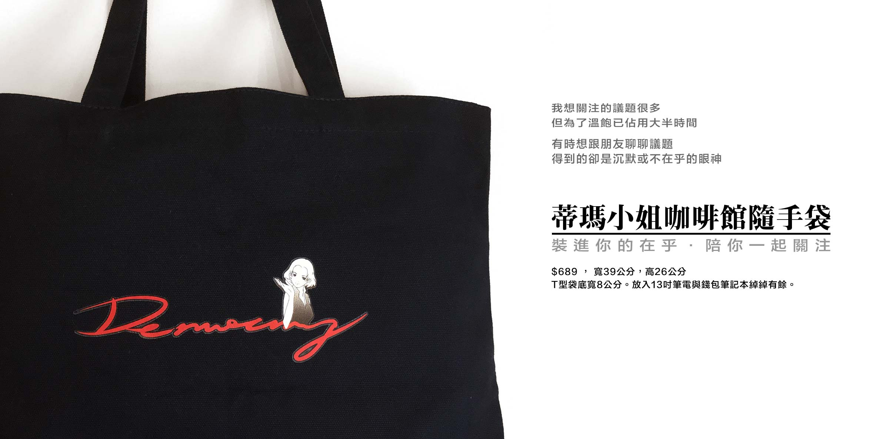

蒂瑪小姐咖啡館隨手袋預購中！
450 個購物袋，將幫助我們有 3 個月的經費持續監督國會

你買菜，你在乎家人吃得健康。以為買有國家認證的油就可以安心，結果還是吃到餿水油。
你工作，在乎自我被肯定，相信只要努力就能有回報。你願意加班不怕吃苦，你身兼數職的做了好多事。結果老闆只給你 30k，只因為這是業界行情。
你知道有很多不公平，卻無能為力。你想關心很多關於自己的生活事，時間卻永遠不夠。
你有這樣的感覺嗎？
我們跟你有同樣的感覺，我們是「國會調查兵團」
因為在乎，所以關注，進而行動。
從 2014 年 9 月至今，我們做了以下行動：
- 建立立委言行資料庫 cic.tw，至今累積 800 餘支立委影片，890多篇新聞。
- 「公民廟口-立委在做天在看」產出 600 餘支立委影片。
- 「蒂瑪小姐咖啡館」產出 150 餘篇文章。2016 年出版實體書籍，2017 年出版電子書。舉辦了 5 場D day現場活動。
- 持續參與聲援各議題團體活動。
- 志工們參與 5 場以上外部團體之講座主講人。
- 關注國會透明，參與立法院開放公民記者採訪座談會。
- 於2016年1月立委選舉前夕，於街頭播放立委立院表現影片。
- 以食安議題訪問尤美女，田秋堇，李貴敏，拍攝訪談影片與整理逐字稿。
2015 年 11 月我們向公民覺醒聯盟提出專案企劃，支應一年多的人事與軟硬體費用。未來我們必須靠自己的能力活下去，以自營自足、社會企業的方式讓「國會調查兵團」計畫可以持續進行。
頂新餿水油事件發生的時候，當時蘇清泉立委說：「『檢驗合格應該可以吃！』即使是由皮革油煉出來，裡面重金屬的鎘，都是合格的。」
我們跟你一樣，也想要吃得安心。假如要追求食品安全，需要有完善的制度，跟有效的執行。而立法委員的職責，正是負責制定國家法律與監督行政單位。
立委是人民一票一票選擇出來的，立委的薪水來自於人民的稅金，人民是立委的老闆，理所當然應監督立委的所作所為，所以我們專注於國會監督。
我們持續在立法院的日常開會中，剪輯生活議題相關的立委質詢影片，讓大家一天只要花10分鐘，就能知道哪個立委說了什麼垃圾話，以及哪個立委表現精彩卻不被媒體注意。
請支持我們，買一個隨手袋，450 個隨手袋的盈餘，將可以幫助我們有 3 個月的經費持續監督國會。讓我們可以陪伴大家一起監督國會，繼續走下去。